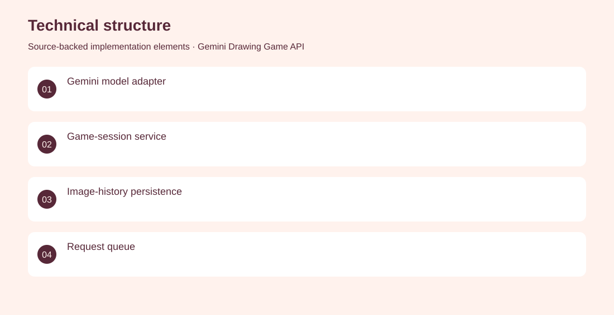
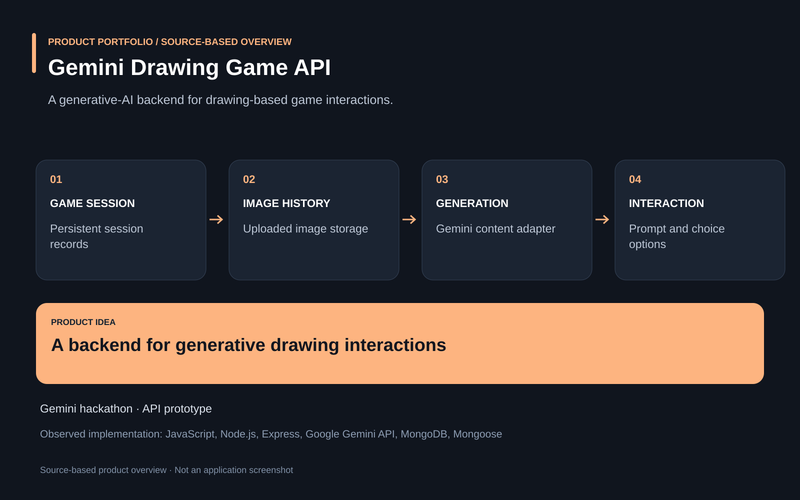

The project
Interactive drawing experiences need to connect game sessions, uploaded images and model responses. A Node.js prototype combines Gemini content generation with game-session records, uploaded image history, prompt options and queued request handling. Developed backend services connecting Gemini generation, image storage and persistent game sessions. Archived Gemini hackathon prototype; no live demo or production readiness verified.
The problem
Interactive drawing experiences need to connect game sessions, uploaded images and model responses.
The solution
A Node.js prototype combines Gemini content generation with game-session records, uploaded image history, prompt options and queued request handling.
My contribution
Developed backend services connecting Gemini generation, image storage and persistent game sessions.
AI capabilities
Gemini content-generation integration
Technical structure

Product overview

The portfolio cover is an editorial illustration. No live product screenshot is presented for this project.
Showcase assets
{kind=link}
{kind=link}
{kind=link}
New portfolio identity. Newly designed marks are portfolio treatments, not claims of official client branding.